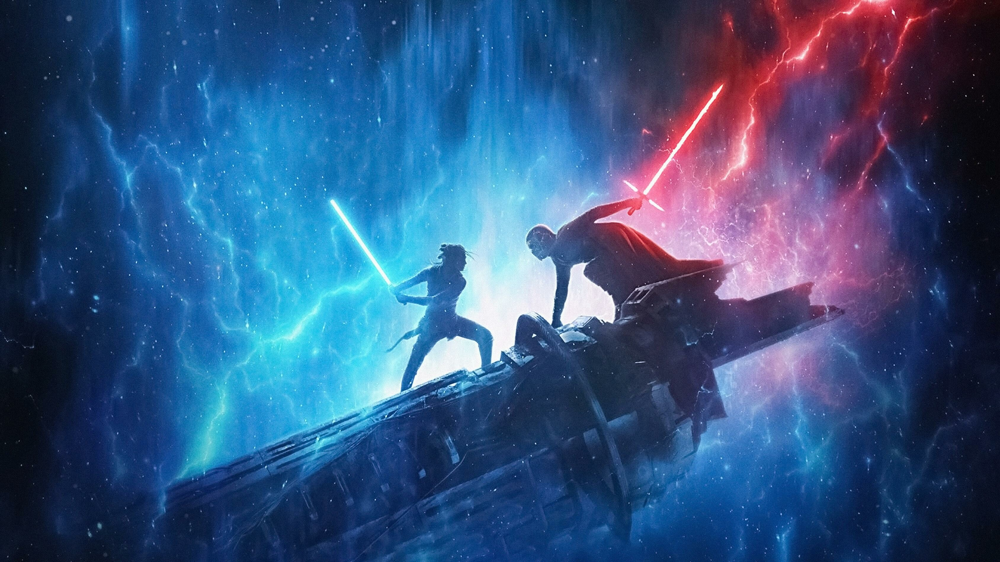
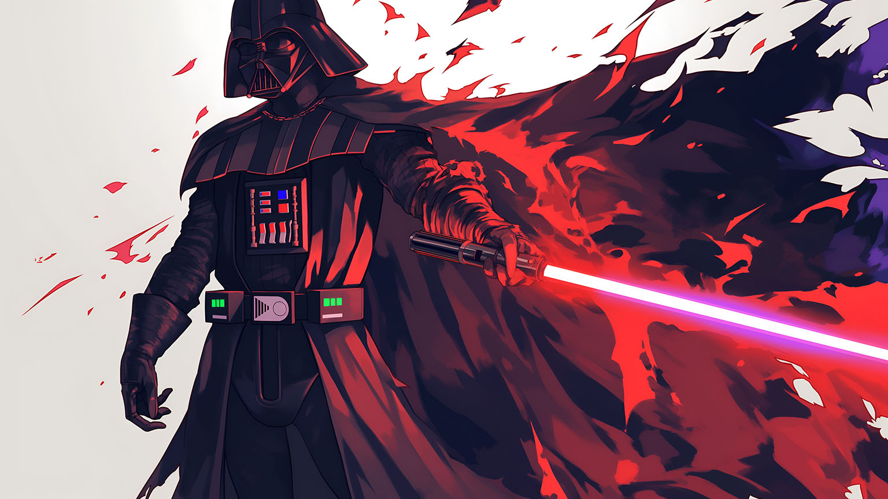

Una vez que el heroico Caballero Jedi llamó a Anakin Skywalker, Darth Vader fue seducido por el lado oscuro de la Fuerza. Siempre marcado por su derrota en Mustafar, Vader se transformó en un Lord Sith cibernéticamente mejorado. En los albores del Imperio, Vader dirigió la erradicación de la Orden Jedi por parte de las Empireadas y la búsqueda de sobrevivientes. Permaneció al servicio del Emperador, el malvado Darth Sidious, durante décadas, haciendo cumplir su voluntad de Maestría y tratando de aplastar a la Alianza Rebelde y otros detractores
Humano sensible a la Fuerza y un Maestro Jedi quien, junto a su hermana gemela, la Princesa Leia Organa, luchó en contra del gobierno del Imperio Galáctico durante la Guerra Civil Galáctica. Hijo del Caballero Jedi Anakin Skywalker y de la Senadora Padmé Amidala de Naboo.
Humano sensible a la Fuerza y un Maestro Jedi quien, junto a su hermana gemela, la Princesa Leia Organa, luchó en contra del gobierno del Imperio Galáctico durante la Guerra Civil Galáctica. Hijo del Caballero Jedi Anakin Skywalker y de la Senadora Padmé Amidala de Naboo.
C-3PO fue reconstruido a partir de piezas de repuesto por Anakin Skywalker, un esclavo humano que vivía en Mos Espa, una ciudad en el mundo del Borde Exterior de Tatooine. Poco después de las Guerras Clon, la memoria de C-3PO fue borrada, aunque la de R2-D2 no. C-3PO y R2-D2 fueron asignados al crucero de Alderaan Tantive IV, donde sirvieron al senador Bail Organa durante diecinueve años.